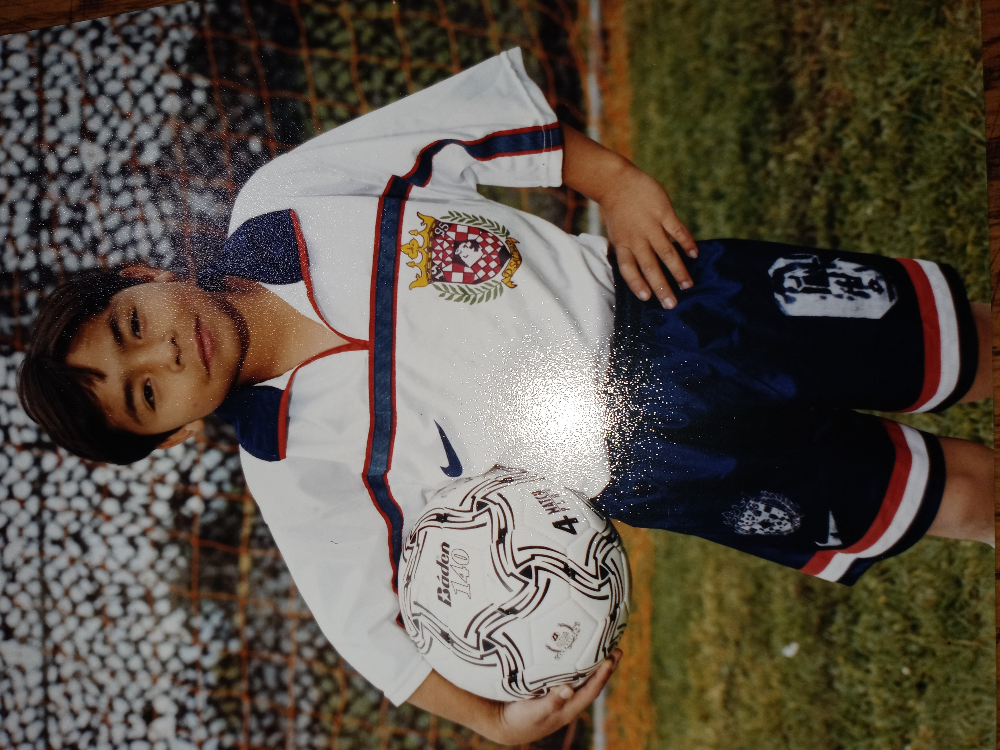
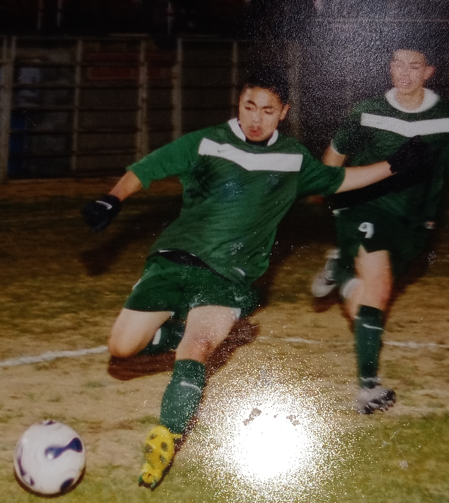
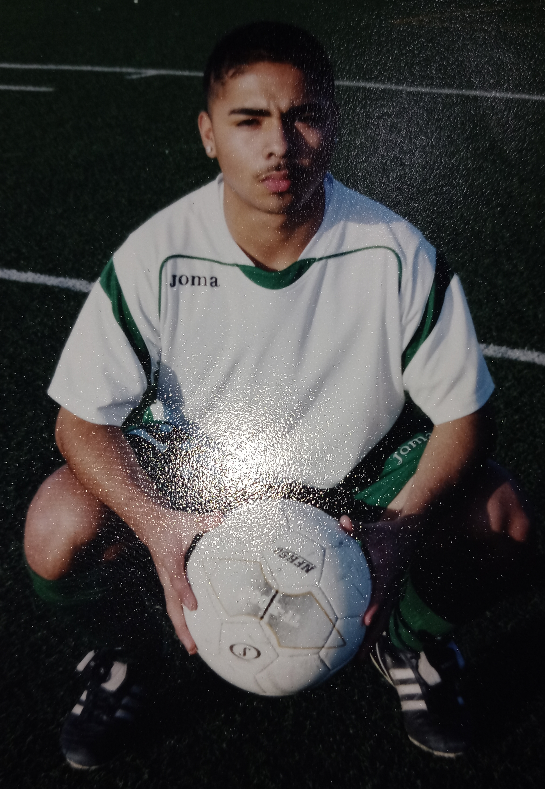
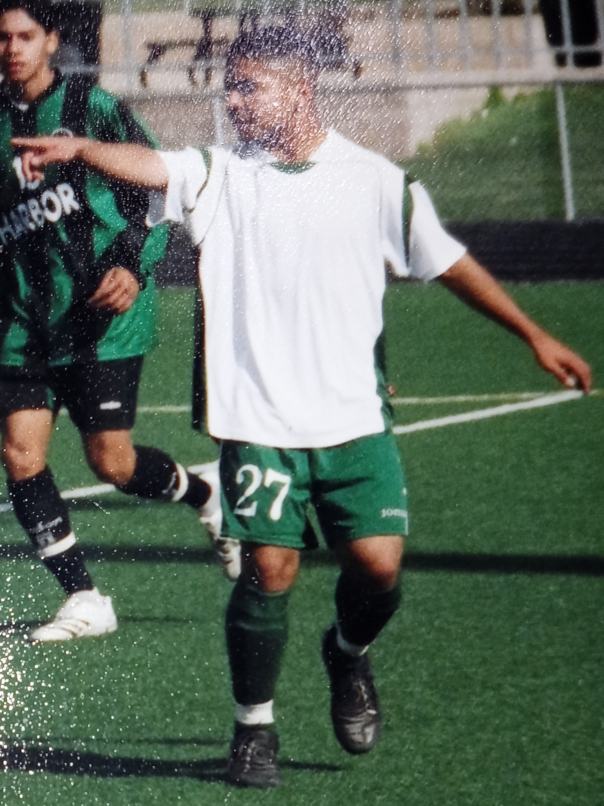
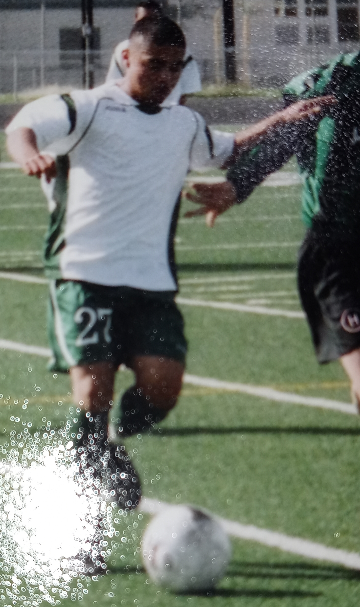
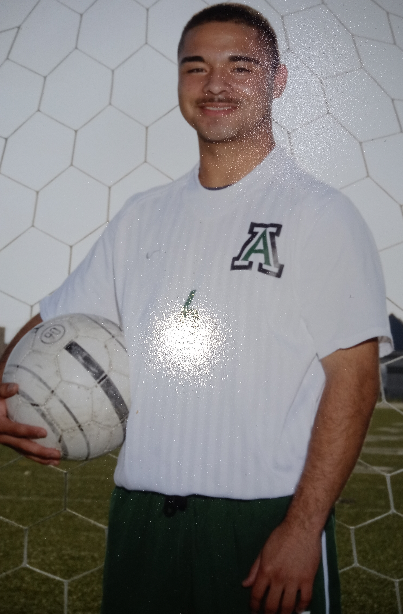
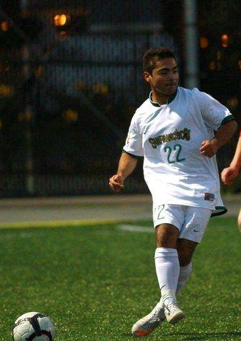

My Life As A Soccer Player
I'm Gerardo Tapia Vera, and I'm born and raised on the soccer fields of Salinas, California. I first began playing soccer at home in my living room by kicking the ball when I was
5 years old before I got the call from my older brother's former soccer coach asking if I wanted to join his soccer team for my age, and I said yes. I believe my first practice
was that very same afternoon at North Salinas High School, and I remember getting in a circle to start off by stretching. The name of the team was Deportivo Salinas, and we
played our first games at the Washington Middle School soccer league. I learned how to play all the positions during my first two years, but I was born to be an offensive play
maker. I became captain of my club team during my first season playing, and I commanded the team throughout all of my youth, teenage, and adult soccer career. I was best
playing as a center midfielder where I learned to control the direction and speed of the ball throughout my career with Deportivo Salinas. We played at the Gavilan Youth Soccer
league where we won various championships, and we played in the NorCal Premiere League where we won 1 Silver championship. I travelled throughout Northern California when
playing for the NorCal league, and we also travelled to Sonoma every summer to play in the 6 versus 6 tournament at Sonoma State University. I developed a passion to play and
live in the hot weather. I played for El Sausal Middle School in East Salinas, I played for Alisal High School in East Salinas, and I played for the University of San Francisco
in the heart of San Francisco. I'm a high school graduate from Alisal High School and a university graduate from the University of San Francisco. I earned my high school diploma
in June 2010, and I earned my Bachelor's of Arts degree in Kinesiology and minor in Health Studies on December 2014. I played varsity soccer all 4 years at Alisal, and I became
a starter my sophemore year as the right midfielder. I became captain my Junior year. We won the league all 4 years I was there including a CCS championship my senior year, a
1-0 win versus our biggest playoffs rival Watsonville High School at Gilroy High School's stadium. I played some time for the varsity team at the University of San Francisco,
but I never became a starter on the team. Fortunately, I also played club soccer and intramural soccer where I was a starter as a center midfilder. I earned a 3.7 G.P.A. in high
school, and my favorite subject was Math. The highest Math class I took in High School was Algebra 2, and I got an A in the class. I earned a 2.8 G.P.A. at the University of San
Francisco, and my favorite course was Human Physiology. I accumilated an A grade in my Human Physiology class as well. As you can see, I have a passion for soccer and education,
but I've also made some not so smart moves in the working world. I've worked various jobs, but I now solely dedicate my time to learning programming languages and reading
non-fiction books. I've redesigned my website various times, but I've yet to be satisfied with any of them due to the fact that I don't know back end coding. My favorite
non-fiction book so far is Cyberspies. I say I work as a Freelance Front End Web Designer and Python programmer, but I've yet to do any coding for a client. Online, I see
that companies are looking to hire junior programmers and are willing to train the individual, and I've applied to those jobs. However, I haven't been hired by any of them.
I don't get contacted, because they're false job postings. Therefore, I have to be dogmatic, disciplined, and hopeful that my company will flourish. I expect this website and
what I do to make an impact on the people that see it. I do desire that my company makes an impact all over the world by allowing children to understand that sports and school
are very important responsibilities in life that lead to the wellbeing and success of any individual. Please feel free to contact me at my cellphone number +18313561442 or my
email gerardov66@gmail.com, thank you.

My first individual soccer photo with Deportivo Salinas at Washington Middle School before a soccer game.

This is a photo of me my freshmen year versus Palma High School on their soccer field.

This is my sophemore year individual photo at Alisal High School before practice.

This is a photo of me my sophemore year versus Harbor High School.

This is me my sophemore year dribbling the ball down the right midfield in attempt to create scoring opportunity.

This is me my junior year celebrating my game winning goal versus Menlo Atherton at Alisal High School.

This is my individual senior year photo at Alisal High School before practice.

This is me passing the ball my freshmen year at the University of San Francisco's Negoesco Stadium in a friendly game before Fall season.